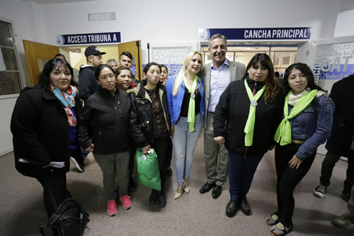

Real Chubut - Agencia de Noticias


Arcioni entregó cartones del “Telebingo Deportivo” a 158 instituciones de Comodoro Rivadavia, Sarmiento y Rada Tilly

El Gobernador encabezó en Comodoro Rivadavia el lanzamiento de una herramienta “ejemplo” a nivel nacional. Destacó que “se pueden lograr cosas como éstas cuando se trabaja en conjunto y sin mezquindad”. Se repartieron 60 mil cartones para el sur provincial y la recaudación será íntegramente para las entidades.
El gobernador Mariano Arcioni lanzó este jueves en Comodoro Rivadavia una nueva edición del “Telebingo Deportivo” que sorteará el próximo 29 de noviembre y entregó un total de 60 mil cartones a 158 entidades deportivas de la ciudad petrolera, Sarmiento y Rada Tilly. La premiación estará a cargo del Instituto de Asistencia Social –Lotería del Chubut-, por lo que lo recaudado en las ventas será distribuido íntegramente entre los clubes participantes.
En sus palabras, el mandatario agradeció a referentes y dirigentes deportivos de la Provincia “por la comprensión, paciencia y colaboración” y remarcó que este lanzamiento es el claro ejemplo que “cuando trabajamos todos juntos, sin ningún tipo de mezquindad y tenemos bien en claro que nuestra función es el bienestar de los ciudadanos, se pueden lograr cosas como éstas”.
Arcioni expresó que “la única manera de seguir adelante es por la vía del respeto y el diálogo”, agregando que “en época de gestión tenemos que ser diligentes, honestos, respetuosos. Dejemos de lado las mezquindades, ahí vamos a poder conversar y avanzar como lo estamos haciendo”.
El acto tuvo lugar pasadas las 20 horas en el gimnasio municipal n° 1 de Comodoro Rivadavia y contó con las presencias del viceintendente Juan Pablo Luque; el titular del Ente Autárquico Comodoro Deportes, Othar Macharashvili; el presidente del Instituto de Asistencia Social –Lotería del Chubut-, Carlos Barbato; el gerente general de Chubut Deportes, David Cárdenas y dirigentes deportivos del sur provincial.
Hacer las cosas bien
Arcioni recordó que siendo vicegobernador de Chubut y “recorriendo las instituciones deportivas, de a poco se fue gestando esta idea. Queríamos empezar a ver cómo podíamos colaborar con las instituciones y surgió el Telebingo Deportivo”.
Manifestó que la edición del año pasado “fue una prueba piloto que fue un éxito, y ahora también va a ser un éxito, pero con la diferencia que tenemos una ley que nos va a permitir ser mucho más ágiles y poder clarificar las cosas con transparencia”.
Agradeció igualmente a la Cámara de Agencieros y a las autoridades municipales “porque sin ellos esto no sería posible”. En ese sentido sostuvo que “cuando aportamos una idea con la sana intención de poder colaborar se pueden lograr estas cosas maravillosas, apoyando a ustedes que tanto hacen por el deporte y la contención social”.
Subrayó que “hoy tenemos una Lotería totalmente desendeudada, cumpliendo con los premios, de eso se trata cuando hay una gestión de Gobierno, de hacer las cosas bien”.
Ejemplo en todo el país
El presidente del IAS, Carlos Barbato, subrayó la “firme decisión política del Gobernador para que esto se realizara, él me instruyó para que se haga sí o sí”. También agradeció “a todos los diputados que de forma unánime votaron la modificación de la ley para que nosotros podamos estar entregando estos cartones”.
El funcionario señaló que “en un principio habíamos hablado que se iba a hacer el sorteo el 29 de agosto y después dijimos el 28 de octubre”, y anticipó que “hablamos con el Gobernador y decidimos que lo vamos a pasar para el 29 de noviembre para que ustedes tengan más tiempo para poder venderlos”.
Barbato remarcó que el Telebingo Deportivo “es ejemplo en todo el país. En ninguna provincia tienen esta herramienta”. Y por último valoró la “prolijidad, organización y la profesionalidad que manejó Comodoro Deportes con la rendición”.
Decisión política en apoyo a clubes
El gerente general de Chubut Deportes, David Cárdenas, manifestó que es “un placer estar en esta ciudad por segunda vez consecutiva lanzando algo que fue una idea genial que se gestó desde Comodoro Rivadavia”.
Remarcó que se trata de “un día de fiesta para nosotros, somos gente del deporte, compartimos las esperanzas y sueños que ustedes inculcan a nuestros hijos y a nuestros jóvenes, y sabemos de la importancia que tiene cada uno de los dirigentes deportivos de nuestra Provincia”.
Finalmente, el funcionario destacó la “decisión política del Gobernador Arcioni por llevar adelante la venta de este Telebingo, y no tengo la menor duda que va a ser un éxito”.
Ganancias para instituciones deportivas
El Telebingo Deportivo, impulsado por Chubut Deportes y el Instituto de Asistencia Social, tiene como objetivo que los clubes y entidades deportivas de la Provincia puedan generar fondos de manera directa.
En esta nueva edición se repartirán en toda la Provincia 120.000 cartones que en total suman 18 millones de pesos, con un valor de cartón de 150 pesos.
Lo novedoso de la iniciativa es que Lotería del Chubut es quien solventa los gastos en premios, por lo que las instituciones deportivas tendrán un 100% de ganancias sin costo alguno.
Premios
La premiación correspondiente al sorteo del próximo 29 de noviembre será, en primera ronda, 20 mil pesos; segunda ronda 30 mil pesos; tercera ronda 50 mil pesos y cuarta ronda, un automóvil Volkswagen Move Up 3 puertas. En tanto, el premio a línea en las cuatro rondas será de 10 mil pesos.
PUBLICIDAD